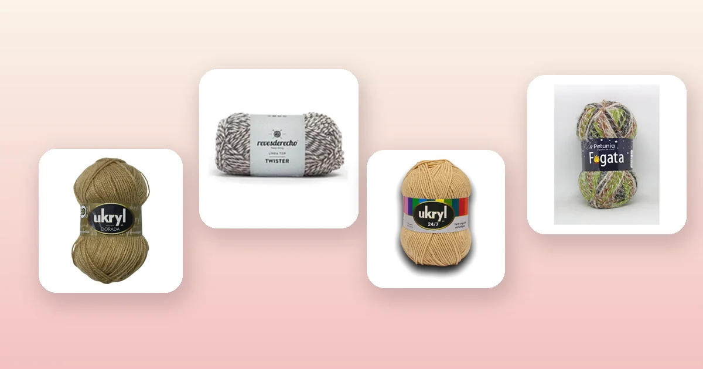

Proyectos de crochet
Cómo tejer un cárdigan a crochet paso a paso
El cárdigan a crochet es la prenda abierta con mangas que combina con todo: se usa sobre una polera, un vestido o incluso un pijama. En esta guía tienes la tabla de tallas completa, el paso a paso de cada pieza (espalda, delanteros, mangas y bordes), cuántos ovillos comprar y qué lana elegir para que quede con la caída y el abrigo que buscas.

Materiales para tejer tu cárdigan
Un cárdigan a crochet es una prenda de nivel intermedio: no es tan sencillo como un poncho, pero tampoco tiene la complejidad de un vestido con entalle. Si ya tejiste un chaleco a crochet, el cárdigan es el siguiente paso natural porque agrega mangas y abertura frontal. Necesitas:
- Entre 8 y 14 ovillos de 100 g, dependiendo de la talla, el largo y el grosor de la lana. Más abajo tienes la tabla exacta por línea y talla.
- Un ganchillo acorde al hilo: 5 a 6 mm para lanas semi gruesas, 6 a 8 mm para lanas gruesas. Si no sabes cuál usar, revisa nuestra guía de qué aguja o ganchillo usar para tejer.
- Aguja lanera, tijeras, cinta métrica y marcadores de puntos.
- 5 a 7 botones del tamaño acorde al grosor del tejido (botones de 2 a 2,5 cm para lana gruesa, de 1,5 cm para semi gruesa). Si prefieres un cárdigan abierto sin botones, puedes omitirlos.
El cárdigan pide lanas que mantengan la forma pero que no queden rígidas, porque la prenda necesita caída en los delanteros y comodidad en las mangas. Estas son las mejores opciones del catálogo:
- Lana gruesa jaspeada, para un cárdigan con textura: Lana Twister Revesderecho Camel o Lana Twister Revesderecho Azul Marino, de 85% acrílico y 15% viscosa, con 150 m por ovillo y efecto jaspeado que disimula cualquier irregularidad. Mira toda la línea en lana Revesderecho.
- Lana semi gruesa para un cárdigan más definido: Lana Ukryl Etiqueta Dorada Camel o Lana Ukryl Etiqueta Dorada Gris, de 70% acrílico y 30% lana, con 200 m por ovillo. Tiene más cuerpo que un hilo fino y la mezcla con lana le da un toque cálido. Toda la línea está en lana Ukryl.
- Lana semi gruesa suave: Petunia Fogata Bosque o Petunia Fogata Llama, de 75% acrílico y 25% nylon, con 140 m por ovillo. Toda la línea en lana Petunia.
- Lana de grosor medio, versátil: Ukryl 24/7 Beige o Ukryl 24/7 Gris, con 150 m por ovillo y 22 colores para elegir. Ideal para un cárdigan liviano de entretiempo.
- Lana gruesa blanca o cruda, para un cárdigan clásico: Ukryl Extra Blanco o Ukryl Natura Crudo, perfectas si quieres un cárdigan en tonos neutros que combine con todo.
Diferencia entre cárdigan y chaleco
Es una de las confusiones más comunes entre quienes empiezan a tejer prendas. La diferencia es clara:
- El cárdigan tiene mangas y se abre por delante. Puede llevar botones, cierre o simplemente quedar abierto. Es una chaqueta tejida.
- El chaleco no tiene mangas. Puede ser cerrado (tipo polera sin mangas) o abierto por delante, pero nunca lleva mangas.
Un cárdigan se construye con cinco piezas: la espalda, dos delanteros y dos mangas. Un chaleco a crochet usa solo tres piezas (espalda y dos delanteros, o espalda y un delantero si es cerrado). El suéter a crochet, en cambio, tiene mangas pero es cerrado: se mete por la cabeza.
Si ya tejiste un chaleco, las piezas del cárdigan te resultarán familiares. La novedad son las mangas: se tejen por separado y se cosen en la sisa, igual que en un suéter.
Tabla de tallas
Estas medidas son para un cárdigan clásico recto, con largo hasta la cadera y mangas largas. Si quieres un cárdigan corto (tipo crop), reduce el largo del cuerpo a 35-40 cm. Si lo quieres largo tipo abrigo, agrega 15-20 cm al largo.
| Talla | Ancho espalda | Ancho delantero (c/u) | Largo total | Largo manga | Ancho manga (puño) | Ancho manga (sisa) |
|---|---|---|---|---|---|---|
| S | 44 cm | 24 cm | 58 cm | 44 cm | 22 cm | 34 cm |
| M | 48 cm | 26 cm | 62 cm | 46 cm | 24 cm | 36 cm |
| L | 52 cm | 28 cm | 66 cm | 48 cm | 26 cm | 38 cm |
| XL | 56 cm | 30 cm | 70 cm | 50 cm | 28 cm | 40 cm |
Cada delantero mide la mitad del ancho de la espalda más 2 cm de cruce para la tira de botones. Así, al cerrar el cárdigan, los delanteros se superponen ligeramente y los botones quedan centrados.
Las medidas del largo de manga van desde la costura del hombro hasta el puño. Si quieres mangas tres cuartos, resta unos 10-12 cm al largo indicado.
La muestra de tensión
Antes de empezar cualquier pieza, teje un cuadrado de muestra de 12 x 12 cm con tu lana y ganchillo elegidos. Mide al centro cuántos puntos entran en 10 cm de ancho y cuántas vueltas en 10 cm de alto. Con esos datos calculas la cadena base de cada pieza.
| Dato | Valor |
|---|---|
| Puntos en 10 cm | 14 (punto alto, ganchillo 6 mm) |
| Vueltas en 10 cm | 8 |
| Ancho espalda | 48 cm |
| Cadena base espalda | 14 ÷ 10 × 48 = 67 puntos + 3 cadenas de altura |
| Cadena base delantero | 14 ÷ 10 × 26 = 36 puntos + 3 cadenas de altura |
| Vueltas del cuerpo (62 cm) | 8 ÷ 10 × 62 = 50 vueltas |
Si nunca has hecho una muestra de tensión, en la guía de cuánta lana necesito para tejer está el método completo con ejemplos. La muestra es el paso que más tiempo ahorra: te evita tejer una prenda entera que no calza.
Paso 1: teje la espalda
La espalda es la pieza más grande y la más sencilla: un rectángulo recto, sin forma. Es la pieza ideal para empezar porque te permite agarrar el ritmo con la lana antes de pasar a las piezas que requieren más atención.
- Haz la cadena base con el número de puntos que calculaste para el ancho de la espalda de tu talla.
- Teje la primera vuelta de punto alto, insertando el ganchillo en la cuarta cadena desde el ganchillo (las 3 cadenas iniciales cuentan como el primer punto alto).
- Sigue vuelta tras vuelta, tejiendo punto alto sobre punto alto. Al final de cada vuelta, haz 3 cadenas de altura para girar y empieza la vuelta siguiente.
- Cuenta los puntos al final de cada vuelta. Si pierdes o ganas un punto, descubre dónde está el error antes de avanzar. Los marcadores de puntos en el primer y último punto de la vuelta ayudan mucho.
- Teje hasta alcanzar el largo total de tu talla (por ejemplo, 62 cm para talla M). Corta la hebra dejando unos 80 cm de cola para la costura de hombros.
La espalda terminada debe medir el ancho y largo exactos de tu tabla. Si la pieza queda más ancha de lo que debería, tu tensión está más suelta de lo que indica la muestra; si queda más angosta, está más apretada. Ajusta el ganchillo si la diferencia es mayor a 2 cm.
Paso 2: teje los dos delanteros
Cada delantero es un rectángulo que mide la mitad del ancho de la espalda más 2 cm de cruce. Los dos delanteros son iguales (el cruce y los ojales se resuelven en el borde final, no en el cuerpo de la pieza).
- Haz la cadena base con los puntos calculados para el ancho de un delantero.
- Teje recto en punto alto, exactamente como la espalda, hasta completar el mismo número de vueltas que la espalda.
- Escote (opcional): si quieres que el cárdigan tenga un escote en V, comienza las disminuciones del lado del cuello cuando falten 8 a 10 cm para el final. Disminuye 1 punto en el borde interior (el del cuello) cada 2 vueltas hasta llegar al hombro. Esto crea una línea diagonal suave.
- Corta la hebra dejando 60 cm de cola.
- Teje el segundo delantero exactamente igual. Si hiciste escote en V, el segundo delantero se teje en espejo: las disminuciones van en el borde opuesto.
Para un cárdigan recto sin escote en V (escote cuadrado), no necesitas hacer disminuciones: los delanteros son rectángulos idénticos al igual que la espalda, solo que más angostos. El escote cuadrado se forma naturalmente cuando coses los hombros y dejas el centro del cuello abierto.
Paso 3: teje las mangas
Las mangas son la parte que diferencia al cárdigan del chaleco. Se tejen desde el puño hacia la sisa, aumentando gradualmente para dar la forma trapezoidal que permite el movimiento del brazo.
- Haz la cadena base del ancho del puño según tu talla (por ejemplo, 24 cm para talla M = 34 puntos con Ukryl Dorada).
- Teje 4 vueltas rectas en punto alto para formar el borde del puño.
- Empieza los aumentos: cada 4 vueltas, haz 1 aumento en cada extremo de la vuelta (2 puntos altos en el primer punto y 2 en el último). Esto suma 2 puntos por vuelta de aumento.
- Sigue tejiendo y aumentando hasta alcanzar el ancho de sisa de tu talla (por ejemplo, 36 cm para talla M). Calcula cuántas vueltas de aumento necesitas: si empezaste con 34 puntos y necesitas llegar a 50, necesitas ganar 16 puntos, lo que significa 8 vueltas de aumento, separadas cada 4 vueltas = 32 vueltas con aumentos + las intermedias.
- Una vez que tengas el ancho de sisa, teje recto (sin aumentar) las vueltas que falten para completar el largo de manga de tu talla.
- Corta la hebra dejando 80 cm de cola para la costura.
- Teje la segunda manga exactamente igual.
Paso 4: une las piezas
La unión es el momento donde las cinco piezas sueltas se convierten en un cárdigan. Hazlo sobre una superficie plana (una mesa o el suelo) para poder alinear los bordes con precisión.
- Cose los hombros: coloca la espalda con el revés hacia arriba. Pon un delantero encima, derecho con derecho, alineando el borde del hombro. Cose con aguja lanera y punto colchonero (o punto raso con ganchillo) desde el borde exterior hacia el cuello. La costura del hombro cubre unos 12 a 14 cm; el centro queda abierto para el cuello. Repite con el otro delantero.
- Marca el centro de la manga: dobla cada manga por la mitad a lo largo y marca el punto medio del borde superior con un marcador.
- Inserta las mangas: alinea la marca central de la manga con la costura del hombro, derecho con derecho. Prende con alfileres de tejer o marcadores y cose desde el centro hacia cada lado. La costura va por toda la abertura de la sisa.
- Cierra los costados y las mangas: con la prenda doblada por los hombros, cose en una sola pasada continua desde el puño de la manga, bajando por la axila y continuando hasta el ruedo del cárdigan. Esto cierra el costado y la manga de un solo tirón. Repite del otro lado.
- Pruébatelo antes de rematar. Verifica que las mangas no queden torcidas y que la sisa permita levantar los brazos cómodamente. Si la sisa queda muy apretada, descose unos puntos de la unión lateral cerca de la axila.
Si prefieres evitar la costura con aguja lanera, puedes unir las piezas con punto raso por el revés: da una costura más plana pero también más rígida. Para un cárdigan, el punto colchonero suele dar mejor resultado porque queda elástico.
Paso 5: bordes y botones
Los bordes son los que le dan al cárdigan su acabado profesional. Una prenda sin bordes queda con los extremos enrollados y aspecto de tejido a medio terminar.
- Borde delantero derecho: con el derecho de la prenda hacia ti, levanta puntos a lo largo de todo el borde delantero derecho (desde el ruedo hasta el cuello) y teje 3 vueltas de punto bajo. Este lado llevará los botones.
- Borde delantero izquierdo con ojales: levanta puntos por el borde izquierdo y teje 1 vuelta de punto bajo. En la segunda vuelta, distribuye los ojales: para un cárdigan de largo 62 cm con 6 botones, haz un ojal cada 10 cm aproximadamente. Cada ojal se hace tejiendo 2 cadenas y saltando 2 puntos. Teje una tercera vuelta de punto bajo, haciendo 2 puntos bajos dentro de cada espacio de cadenas (esto cierra el ojal por arriba dejando el agujero). Si quieres los botones del lado izquierdo, invierte los lados.
- Cuello: levanta puntos alrededor de toda la abertura del cuello (incluyendo los bordes ya tejidos de los delanteros) y teje 3 a 5 vueltas de punto bajo. En las esquinas del cuello, haz 2 disminuciones por vuelta para que el borde no se abra.
- Puños: si el borde del puño quedó suelto, teje 2 vueltas de punto bajo alrededor de cada puño.
- Ruedo: teje 2 vueltas de punto bajo por todo el borde inferior del cárdigan.
- Cose los botones: marca la posición de cada botón sobre la tira de botones (borde derecho), alineándolos con los ojales del borde izquierdo. Cóselos con hilo de coser resistente o con la misma lana usando aguja lanera.
Remata todas las hebras con aguja lanera, entrelazándolas por el revés del tejido en al menos 5 cm. Bloquea la prenda completa extendida sobre una toalla húmeda o vaporiza con plancha a distancia (sin tocar el tejido). Esto empareja los puntos y da la caída definitiva.
Cuántos ovillos necesitas según la lana
Un cárdigan usa más lana que un chaleco porque tiene mangas, y más que un suéter si lleva cruce delantero. Las cantidades incluyen un margen del 15% para los bordes y posibles errores.
| Lana | Grosor | Metros por ovillo | Talla S | Talla M | Talla L | Talla XL |
|---|---|---|---|---|---|---|
| Lana Twister Revesderecho | Grueso | 150 m | 8 | 10 | 11 | 13 |
| Ukryl Etiqueta Dorada | Semi grueso | 200 m | 7 | 8 | 9 | 10 |
| Petunia Fogata | Semi grueso | 140 m | 9 | 10 | 12 | 13 |
| Ukryl 24/7 | Medio | 150 m | 8 | 9 | 11 | 12 |
| Lana Secret Revesderecho | Grueso | 100 m | 11 | 13 | 14 | 16 |
Con lanas de mayor metraje como Ukryl Etiqueta Dorada Camel (200 m por ovillo) necesitas menos ovillos y el tejido queda más liviano, ideal para un cárdigan de entretiempo. Con lanas gruesas como Lana Twister Revesderecho Camel el cárdigan avanza más rápido pero necesitas más ovillos porque cada metro de lana cubre menos superficie.
Si quieres afinar tu cálculo, usa la fórmula de la guía de cuánta lana necesito para tejer. También puedes revisar los tipos de lana para tejer para entender mejor qué grosor le conviene a tu proyecto.
Variaciones del cárdigan básico
- Cárdigan oversize: sube una o dos tallas en la tabla y mantén el largo de manga. El resultado es un cárdigan holgado tipo boyfriend, muy cómodo para usar en la casa. Queda especialmente bien con lanas jaspeadas como la Twister Revesderecho.
- Cárdigan cropped: reduce el largo del cuerpo a 35-40 cm (corta a la cintura). Ideal para usar sobre vestidos o poleras largas. Necesitas unos 3 a 4 ovillos menos que el largo estándar.
- Cárdigan con capucha: en vez de tejer el borde del cuello, levanta puntos en la mitad trasera del cuello y teje un rectángulo de 35 x 70 cm. Dóblalo por la mitad y cose el borde superior para formar la capucha.
- Cárdigan con bolsillos: teje dos cuadrados de 14 x 14 cm con la misma lana y cóselos a los delanteros a la altura de la cadera. Marca la posición con alfileres antes de coser para que queden simétricos.
- Cárdigan con textura: alterna vueltas de punto alto y punto bajo para crear costillas horizontales, o teje en punto garbanzo cada 4 vueltas para dar relieve. Revisa los puntos básicos de crochet para variaciones de textura.
- Cárdigan largo tipo abrigo: agrega 15-20 cm al largo del cuerpo. Llega hasta medio muslo y funciona como abrigo ligero. Necesitas 3 a 5 ovillos adicionales.
Errores comunes al tejer un cárdigan
- No hacer la muestra de tensión. Es el error más costoso: tejer cinco piezas completas para descubrir que la prenda no calza. Siempre empieza con la muestra y verifica las medidas de la primera pieza (la espalda) antes de seguir con los delanteros.
- Mangas de distinto largo. Pasa cuando no se cuentan las vueltas. Anota cada vuelta y cada aumento en un papel o en el celular. No confíes solo en la cinta métrica porque la tensión puede variar entre una sesión y otra.
- Sisas que no calzan. Si la costura de la sisa queda muy apretada, la manga tira y la prenda se deforma. Verifica que el ancho de la parte superior de la manga coincida con el perímetro de la abertura de sisa (largo del hombro que no se cosió + las vueltas laterales del cuerpo).
- Olvidar el cruce del frente. Si los delanteros miden exactamente la mitad de la espalda, al cerrar con botones la prenda tira. Los 2 cm extra de cruce son esenciales para que los botones queden cómodos.
- Bordes que ondean. Cuando el borde de punto bajo tiene demasiados puntos, ondula; cuando tiene muy pocos, se contrae. La regla general es levantar 1 punto bajo por cada punto de la vuelta en bordes horizontales, y 1 punto bajo cada 1 o 2 vueltas en bordes verticales.
- No bloquear la prenda. El bloqueo empareja los puntos, relaja las costuras y da la caída correcta. Sin bloqueo, las costuras quedan rígidas y los bordes tienden a enrollarse.